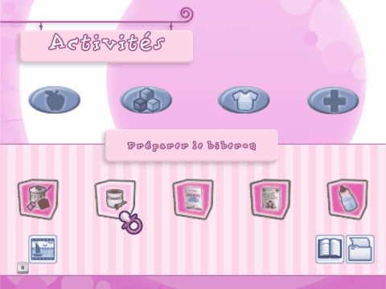

Ce menu te permet de sélectionner les mini-jeux des différentes pièces et d'afficher ton inventaire. Il te permet aussi d'accéder à tes albums photos, de mettre le jeu en pause pour revenir au menu principal ou de sauvegarder la partie en cours.

Inventaire Alimentation
Les ingrédients nécessaires à la préparation des repas de ton bébé sont disponibles ici. Les articles présents dans cet inventaire sont uniquement accessibles depuis la cuisine, pièce dans laquelle tu prépares tous les repas de bébé.
Inventaire Jouets
Joue ! Si tu te trouves dans la salle de jeu ou dans le jardin, tu peux amuser ton bébé avec ses jouets préférés !
Inventaire Vêtements et meubles
Tu as acheté de nouveaux vêtements pour ton bébé ? Ou bien des meubles pour sa chambre ? Tous les vêtements et tous les meubles de la chambre de bébé se trouvent dans cet inventaire.
Inventaire Bien-être
Ton bébé doit toujours être propre. Vérifie que tu as tout ce qu'il te faut pour le bain ou pour les changes. Tous les articles nécessaires à la toilette de bébé se trouvent dans cet inventaire.
Album photos
Sélectionne cette icône pour ouvrir l'album photos et regarder toutes les photos que tu as prises de ton bébé. Chaque mois, tu peux aussi en présenter une au concours de beauté (voir section Mini-jeux pour plus d'informations). Choisis l'icône Corbeille pour supprimer la photo. Appuie sur le bouton B pour revenir au menu d'interaction.
Icône Livre
Sélectionne cette icône pour changer de langue ou quitter le jeu.
Icône Dossier
Sélectionne cette icône pour sauvegarder la partie en cours.